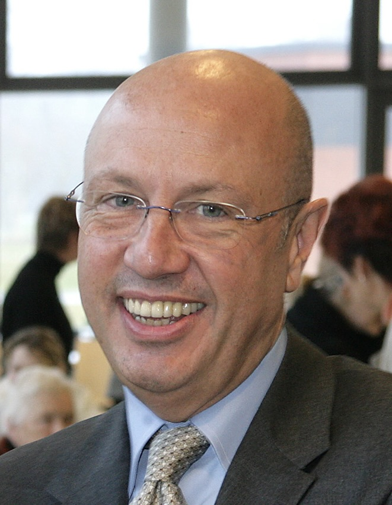

Berlin gilt als Millionenstadt. Trotzdem funktioniert sie manchmal wie ein Dorf.
Jedenfalls war das mein Eindruck in den Jahren, in denen ich die Kinderklinik in Berlin-Buch leitete. Wer sich sozial engagierte, begegnete sich immer wieder. Der eine kannte den anderen, man stellte sich gegenseitig vor, aus Gesprächen entstanden Ideen und aus Ideen manchmal tolle Projekte.
So lernte ich Michael Zehden kennen. Ich war damals in das Kuratorium der Deutsch-Israelischen Hilfe für krebskranke Kinder berufen worden. Vorsitzende der Stiftung war Friede Springer, Michael Zehden gehörte dem Vorstand an. Kurz zuvor war ich erstmals bei der Gala Ein Herz für Kinder aufgetreten. Wahrscheinlich war ich dadurch auch für ihn interessant geworden.
Michael Zehden war eine schillernde Persönlichkeit. Erfolgreicher Hotelier, hervorragend vernetzt und jemand, der genau wusste, wie Berlin funktionierte. Er konnte ausgesprochen großzügig sein, verstand es aber ebenso gut, seine eigenen Interessen geschickt einzubringen. Das wirkte auf mich nie unangenehm. Es war einfach seine Art.
Damals wollte er seinen Sohn Ben Jaimen, einen jungen Musiker, etwas bekannter machen. Geplant war ein Auftritt beim traditionellen Silvesterprogramm am Brandenburger Tor. Dafür sollten Kinder mit auf der Bühne stehen. Michael fragte mich, ob einige Kinder aus unserer Klinik mitmachen könnten. Ich fand die Idee sympathisch. Für unsere Patienten wäre das ein außergewöhnliches Erlebnis gewesen. Ben Jaimen war ein sympathischer junger Mann. Er besuchte mich in der Kinderklinik und wir sprachen über eine Kooperation, vielleicht sogar einen Auftritt in unserem Theater.

Um das Projekt für die Silvesterveranstaltung am Brandenburger Tor voranzubringen, lud Michael Zehden mehrere Beteiligte zu einem Abendessen in sein Crowne Plaza Hotel am Kurfürstendamm ein. Mit am Tisch saßen unter anderem die damalige BILD-Chefredakteurin Marion Horn, der Berliner Kulturstaatssekretär Tim Renner sowie meine Familie und ich. Der Abend verlief ausgesprochen angenehm. Es gab Prime Rib, hervorragende Weine und gute Gespräche. Wir unterhielten uns über Musik, Berlin und natürlich über unsere Kinderklinik. Irgendwann fragte mich Michael, ob ich Wein möge.
„Ja“, antwortete ich. „Am liebsten kalifornischen.“
Ich dachte, damit sei das Thema erledigt. Ein paar Tage später wurde bei uns zu Hause eine Holzkiste abgeliefert. Darin lagen mehrere Flaschen Robert Mondavi Chardonnay – einer der bekanntesten kalifornischen Chardonnays überhaupt. Das war typisch Michael Zehden. Er hörte aufmerksam zu und vergaß solche Kleinigkeiten nie.
Nach dem Abendessen wechselten wir gemeinsam in ein zweites Hotel, das ebenfalls zu seinem Unternehmen gehörte: das Ellington Hotel. Dort trat an diesem Abend sein Sohn Ben Jaimen auf. Michael Zehden führte uns stolz durch das Haus und ließ uns an diesem kleinen Familienprojekt teilhaben. Man merkte, wie sehr ihm daran lag, den musikalischen Weg seines Sohnes zu unterstützen.
Einige Zeit später lud er mich erneut ein. Diesmal ging es ins Axel-Springer-Hochhaus. Friede Springer empfing uns in ihrem Büro im achtzehnten Stock. Schon der Raum war bemerkenswert. Während das Hochhaus modern und sachlich wirkte, hatte sie das Büro ihres verstorbenen Mannes Axel nahezu unverändert erhalten. Es erinnerte eher an ein großes Wohnzimmer im Alpenstil als an das Büro einer der einflussreichsten Unternehmerinnen Deutschlands. Holzgetäfelte Wände, traditionelle Möbel, Landschaftsbilder – ein erstaunlicher Kontrast zu Glas, Stahl und Berlin.
Wir unterhielten uns über verschiedene Projekte, über die Stiftung und natürlich auch wieder über die Idee, Michaels Sohn musikalisch zu fördern. Friede Springer begegnete ich später noch mehrfach.
Sie war völlig anders als Maren Otto. Während Maren Menschen recht schnell an sich heranließ und rasch Begeisterung ausstrahlte, blieb Friede Springer freundlich und gleichzeitig auf Distanz. Ich hatte nie das Gefühl, ihr wirklich nahezukommen. Das war vermutlich einfach ihre Art. Selbst bei den Galas von Ein Herz für Kinder kam sie nie zur Aftershow-Party. Sie empfing ihre illustren Gäste, darunter George Clooney oder Prinz Harry, lieber in ihrem „Alpen-Chalet“ oben im Springer-Hochhaus. Interessant fand ich auch, dass sie eng mit meinem befreundeten Kollegen Professor Manfred Gahr aus Dresden befreundet war. Gemeinsam mit seiner Familie unternahm sie regelmäßig Wanderungen in der Sächsischen Schweiz. Berlin war eben tatsächlich ein Dorf.
Michael Zehden blieb unserer Kinderklinik ganz praktisch verbunden. Als wir später Geld für unser Elternhaus sammelten, traf ich mich mit ihm auf einen Kaffee. Wir unterhielten uns eine ganze Weile über das Projekt und darüber, wie sich das Elternhaus entwickeln sollte. Irgendwann fragte er ganz direkt:
„Wollen Sie eine Spende?“
„Ja.“
„Gut. Dann überweise ich Ihnen 5.000 Euro.“
Damit war das Thema entschieden.
Noch mehr beeindruckte mich allerdings, was danach kam. Über viele Jahre ließ Michael Zehden jeden Donnerstag ein besonderes Abendessen aus seinem Crowne Plaza Hotel in unser Elternhaus liefern. Die Eltern schwer kranker Kinder, die oft seit Wochen oder Monaten fern ihrer Heimat lebten, bekamen einmal pro Woche ein gemeinsames Abendessen auf Hotelniveau. Es war eine kleine Geste, die für viele Familien eine große Bedeutung hatte.
So habe ich Michael Zehden in Erinnerung behalten. Als einen Mann mit einem ausgezeichneten Gespür für Menschen und Netzwerke. Einen Geschäftsmann, der seine eigenen Interessen durchaus geschickt verfolgte, gleichzeitig aber bereit war, anderen großzügig zu helfen. Gerade diese Mischung machte ihn für mich zu einer der interessantesten Persönlichkeiten, denen ich in Berlin begegnet bin.